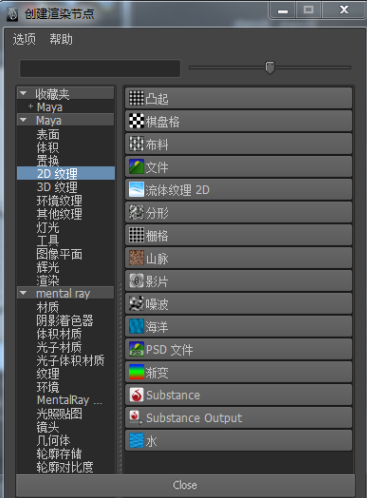

使用发射贴图，您可以发射流体属性，包括 2D 纹理的密度、热量和燃料。
使用流体发射贴图
- 通过选择 >
 或 > 来创建 3D 或 2D 流体容器。请参见不使用发射器的情况下创建流体容器。
或 > 来创建 3D 或 2D 流体容器。请参见不使用发射器的情况下创建流体容器。 - 执行下列操作之一：
- 若要添加曲面发射器，请按住 Shift 键并选择希望流体从其发射的多边形或 NURBS 对象，然后选择 > 。
在“从对象发射选项”(Emit from Object Options)窗口中，从“发射器类型”(Emitter Type)列表中选择“表面”(Surface)，然后单击“应用”(Apply)。
- 若要添加体积发射器，请选择 > 。
在“发射器选项”(Emitter Options)窗口中，从“发射器类型”(Emitter Type)列表中选择“体积”(Volume)，然后单击“应用”(Apply)。
- 若要添加曲面发射器，请按住 Shift 键并选择希望流体从其发射的多边形或 NURBS 对象，然后选择 >
- 调整发射器设置。请参见 fluidEmitter。
- 选择流体容器。
- 在“属性编辑器”(Attribute Editor)中，单击“fluidEmitter”选项卡。
- 在“流体属性”(Fluid Attributes)部分，单击要使用的发射类型的图标。
例如，要使用发射贴图发射密度，则单击“密度发射贴图”(Density Emission Map)右侧的
 图标。
图标。 此时将显示“创建渲染节点”(Create Render Node)窗口。
- 在“创建渲染节点”(Create Render Node)窗口中的“Maya”下面，从列表中选择“2D 纹理”(2D Textures)。
- 在右侧面板中，单击要使用的 2D 纹理。 
有关纹理的信息，请参见 2D 和 3D 纹理。